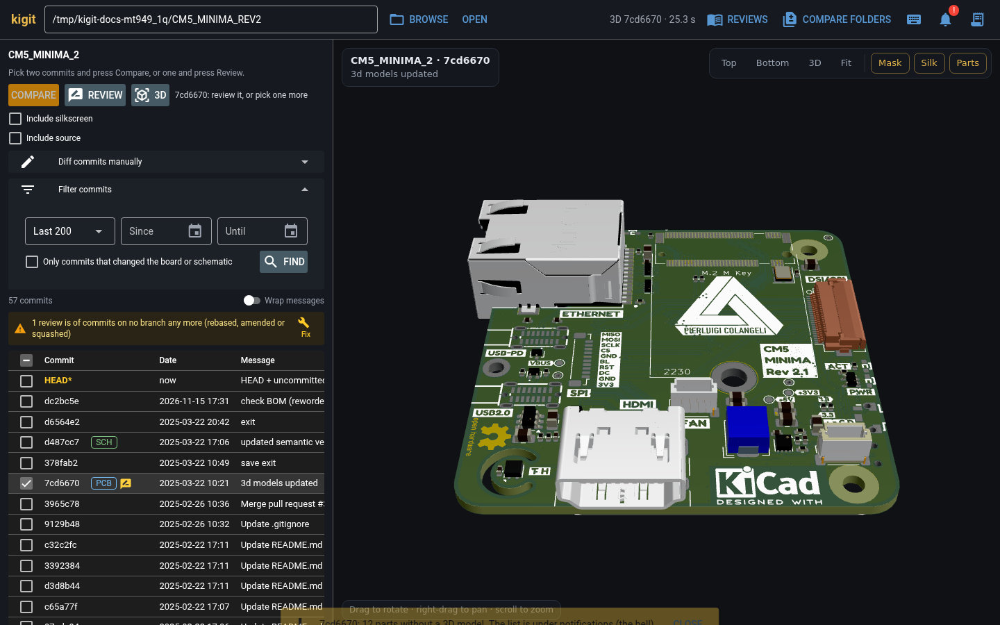
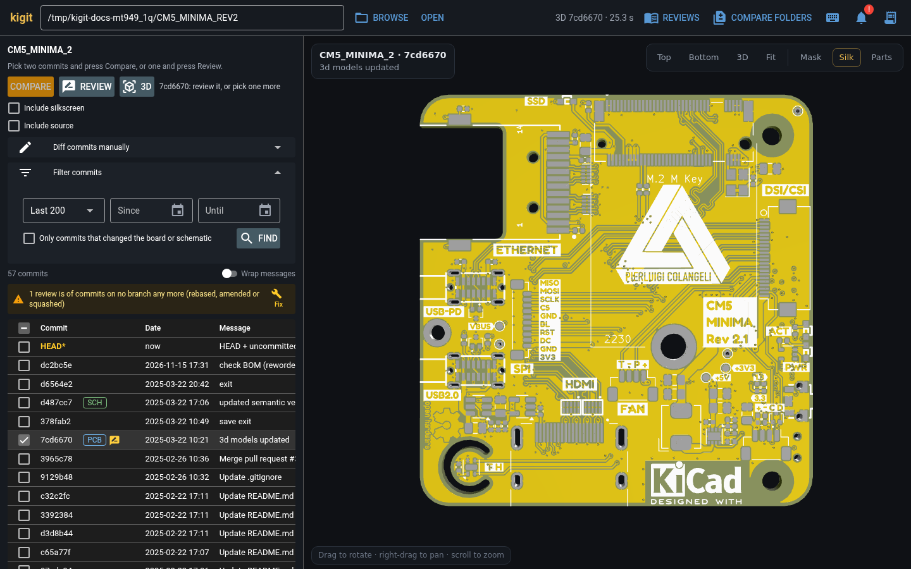
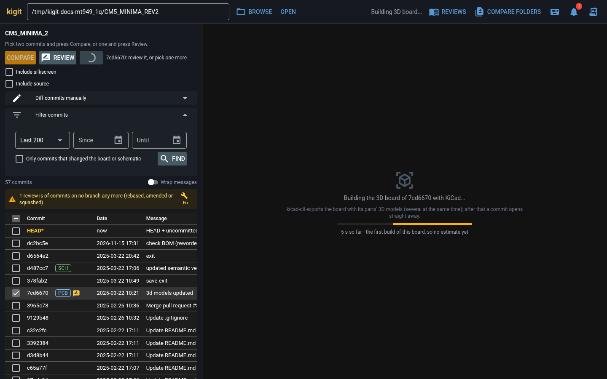
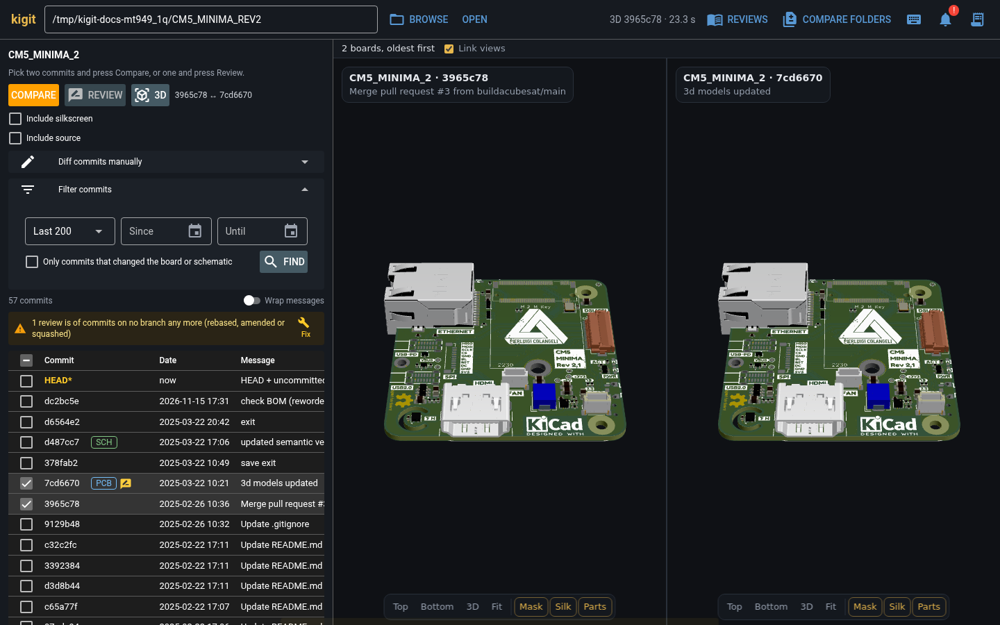
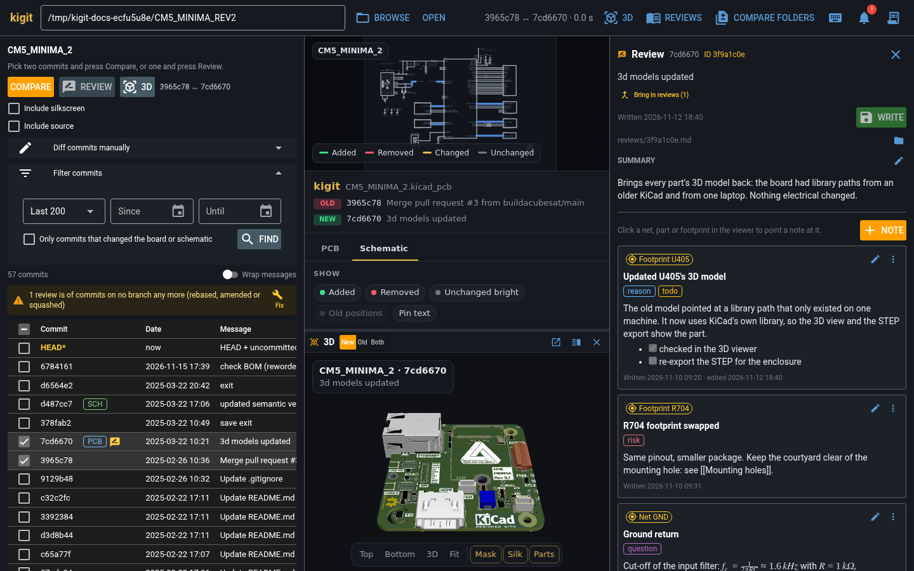
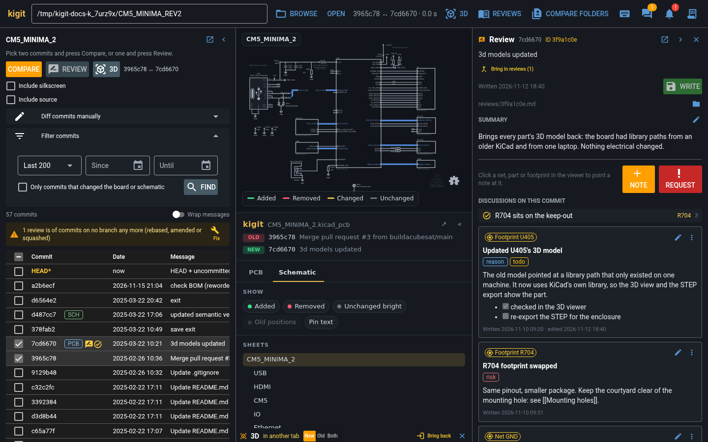
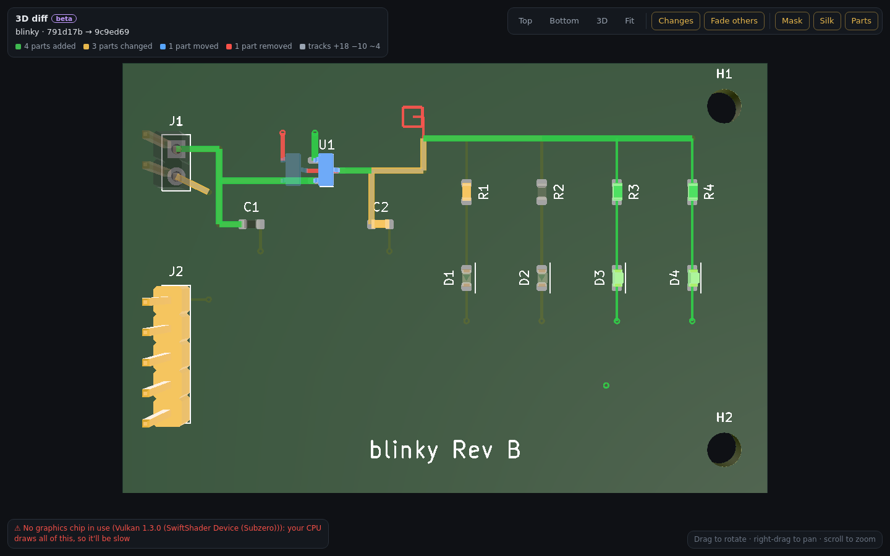
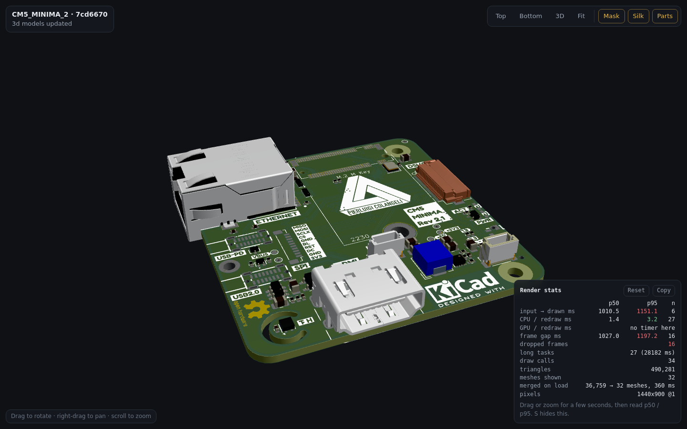

3D View¶
See a commit's board in 3D, the way KiCad draws it: copper, pads, silkscreen, solder mask and the parts' 3D models. It isn't a comparison, just how the board looked then. Put several commits side by side, or dock it beside a comparison.
Needs KiCad 8 or newer
KiCad makes the 3D model (kicad-cli pcb export glb); kigit only shows it. kigit finds kicad-cli on your PATH or where the KiCad installer puts it; if it's somewhere else, set KIGIT_KICAD_CLI to its path.
| KiCad | What you get |
|---|---|
| 9, 10 | The full board: copper, pads, solder mask, silkscreen and parts |
| 8 | Copper (tracks and zones) and parts, without pads, solder mask or silkscreen (KiCad 8 can't export those); kigit says so |
| 7 or older | No 3D view: KiCad 7 can't export a model kigit can show |
A board saved by a newer KiCad than the one kigit finds (say, saved in KiCad 9, with KiCad 8 installed) can't be opened by it; kigit says so. If you have several KiCads, kigit uses the newest it finds (or KIGIT_KICAD_CLI).
One commit¶
In the GUI, pick one commit (or the working tree at the top) and press 3D.

- Drag to rotate, right-drag (or Shift-drag) to pan, scroll to zoom.
- Top, Bottom and 3D jump to those views, Fit brings the whole board back into view.
- Parts, Mask and Silk hide or show the parts, the solder mask and the silkscreen.
Following traces¶
Under the solder mask, traces are faint, in KiCad's own 3D viewer too. Turn Mask off (M) and the copper lies bare, so every trace is easy to follow, with its clearance around it:

Making the model¶
The first time you open a commit in 3D, KiCad makes its model: a few seconds for a small board, about half a minute for a big one. After that, the same commit opens straight away for the rest of the session.

Those times are kept in 3d-build-times.json in kigit's app folder; the very first build of a board just counts the seconds.
kigit takes the board, its project file and any 3D model files in the repository out of that commit, so footprints that point at models with ${KIPRJMOD} find them. A board saved by an older KiCad points at that version's library (${KICAD8_3DMODEL_DIR}/...wrl); kigit points those at your KiCad's library (and at the .step models from KiCad 10 on, which has no .wrl), so they show too.
Parts whose model file can't be found at all, such as an absolute path on someone else's computer, are left out. The notifications list them, with the file KiCad looked for.
Side by side¶
Pick up to four commits and press 3D to see their boards side by side, oldest first. Turn, zoom or pan one and the others follow, so you see each board from the same angle; hiding the mask or the parts on one hides it on all. Link views at the top (or L) turns that off.

Their models are made at the same time.
Beside a comparison¶
While comparing two commits, press 3D in the header to dock the board in 3D next to the diff, so you can look at both. New, Old or Both (side by side, views linked) picks which. It works for Compare folders too, with no git: each folder's board as it is on disk.

- Drag the divider to resize it; double-click it to reset.
- puts it below the comparison instead of beside it, or back. The first time, kigit picks whichever leaves the comparison more room; after that it remembers.
- opens it in a browser tab of its own (to put on another screen, say). The dock shrinks to a bar under the comparison, where New, Old and Both still choose what that tab shows. Close the tab, or press Bring back, and it's docked again where it was. If nothing opens, allow pop-ups for the kigit page.

3D diff (beta)¶
3D diff beta in the header (next to 3D, while a comparison shows) opens what changed between the two boards in 3D, in a tab of its own. It's new and not fully tested: the 3D view above is unchanged, and is still the quick, reliable one.

- Parts: added in green, changed in amber, moved in blue with a ghost where it was, removed as a red ghost (taken from the older board's model). A part without a 3D model, like a test point, gets an outline around its pads instead.
- Hover a part to see what it is: its reference, value and footprint, whether it was added, changed, moved or removed, and what changed (a field's old and new value, moved, pads, graphics). The part gets a white box around it. Ghosts tell you they're an old place. Parts on the far side of the board don't answer through it.
- Copper: added, removed and changed tracks, arcs and vias as coloured strips on the copper (top or bottom; inner layers drawn fainter on top).
- The legend in the corner counts them. Changes (C) hides or shows the marks, Fade others (U) fades the parts that didn't change, and Mask, Silk and Parts (M, K, P) work as in the 3D view.
- It uses the same models as the 3D view, so a board already made there isn't made again. The tab waits while KiCad makes them.
- The bottom corner says which graphics chip draws the page: a dedicated GPU (fine), built-in graphics (the GPU inside the processor, sharing its memory and power: fine for most boards, big ones may lag), or none, where your CPU draws everything in software and it will be slow. It's the chip your browser uses: laptops with a dedicated GPU often run the browser on the built-in one to save battery. To change that on Windows, go to Settings → System → Display → Graphics, add your browser and pick High performance (or use the NVIDIA Control Panel). On Linux, start the browser with
prime-runorDRI_PRIME=1.chrome://gpushows which chip is in use. With weak graphics, kigit draws at a lower resolution to keep it moving. - S shows the same render stats as the 3D view, plus what the diff added (changed parts kept apart, ghosts, strips) and how long it took to load (data, models, building the scene).
- Zones, silkscreen and the schematic aren't marked in 3D: the 2D comparison shows those.
It works for Compare folders too. If no tab opens, allow pop-ups for the kigit page.
If it feels slow¶
Press S in the 3D view for render stats: how long after your input a frame is drawn, how long each redraw takes (CPU, and GPU where the browser can time it), the gaps between frames while you drag, dropped frames, draw calls and triangles, each as p50 / p95. Copy puts them on the clipboard as JSON, handy for a bug report.

KiCad exports a board as tens of thousands of small pieces; kigit merges them into a few dozen when it loads ("merged on load"), so even big boards turn smoothly. Hiding the parts makes it lighter still.
From the command line¶
kigit --3d HEAD~1 -o board.glb # the board at HEAD~1 as a 3D model (binary glTF)
kigit --3d -o board.glb # the working tree
The .glb opens in most 3D tools (Blender, online glTF viewers).